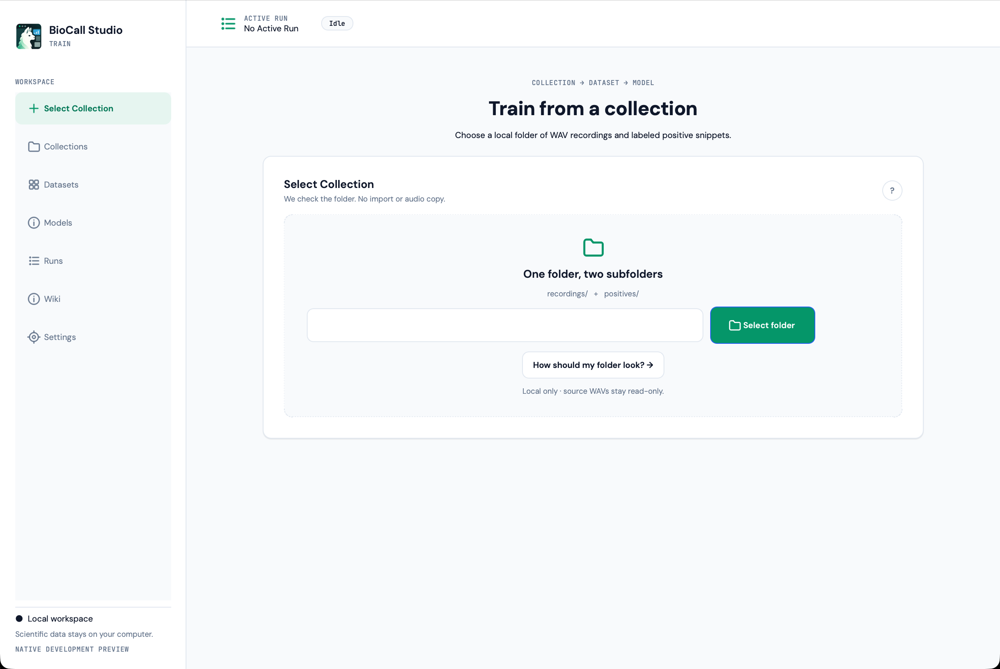
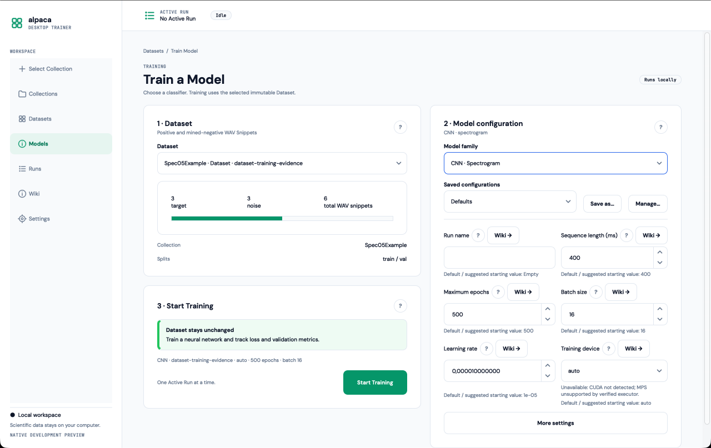

AVAILABLE NATIVE WORKFLOW
Train
Build verified CNN and Random Forest Models from recordings and labeled examples.
Opens a reference to the existing native Train—not a browser reimplementation.CHOOSE A WORKSPACE
Train a detector, apply it to new recordings, then review candidate calls—all on your computer.
AVAILABLE NATIVE WORKFLOW
Build verified CNN and Random Forest Models from recordings and labeled examples.
Opens a reference to the existing native Train—not a browser reimplementation.ST-01 PROTOTYPE
Find CNN candidates, optionally assess them with RF, and export a traceable corpus.
All activity and scientific values are visibly simulated demonstration data.COMING LATER
Inspect and verify candidate calls with a focused expert review workflow.
Review is not implemented in ST-01.EXISTING NATIVE EXPERIENCE
This prototype does not redesign or reproduce the working PySide6 Train workspace.


FUTURE WORKSPACE
Candidate verification and expert annotation are intentionally outside ST-01.
ACTIVE DEMO RUN
No active RunDETECT SETUP
Choose a Train CNN Model and a recording root in either order.
A verified binary Train Model starts first-pass detection.
The recognizable recordings/ folder is included by default.
These controls illustrate proposed settings; they are not scientifically validated inference parameters.
SOURCE INVENTORY
Approve the WAVs that belong to this Detect Collection.
Reading WAV headers
/Volumes/Field/Rainforest_2026
A moved root is never accepted silently.
/Volumes/Field/Rainforest_2026/Volumes/Archive/Rainforest_2026RUN · CNN CANDIDATE DETECTION
No demonstration Run has started.
Waiting
The completed Result keeps this source status; it does not turn failure into zero detections.
| Recording | Outcome | Correction |
|---|---|---|
| Dawn_Broken.wav | Unreadable after scan | Repair source, rescan, then start a new Run |
METADATA-ONLY RESULTS
Intervals refer to original recording time; no audio is copied into a Result.
RESULT LINEAGE
Times in original source recording
| Select | Start | End | CNN score | RF status |
|---|---|---|---|---|
| 00:12:44.320 | 00:12:45.120 | 0.91 Demo | accepted | |
| 00:31:08.540 | 00:31:09.340 | 0.84 Demo | rejected | |
| 01:04:27.100 | 01:04:27.900 | 0.77 Demo | unscored | |
| 01:22:10.000 | 01:22:10.800 | 0.73 Demo | accepted |
The completed demonstration Result contains no intervals. The recording outcomes and provenance remain available.
Candidate metadata is preserved, but source navigation is unavailable until the root is relinked and checked.
OPTIONAL SECOND LAYER
Creates a new metadata-only derived Result. The original CNN Result stays selectable and unchanged.
Feature schema mismatch. Choose a compatible RF Model.
CORPUS EXPORT
Choose what to create and where to write it. Source-time provenance travels with every output.
App metadata: ~/Library/Application Support/BioCall Studio/Detect/…
Corpus destination: Not selected
| Original source interval | Planned output | Export offset |
|---|---|---|
| Dawn_A01.wav · 00:12:44.320–00:12:45.120 | snippets/Dawn_A01__start-0764320ms__end-0765120ms.wav | concat.wav · 00:00.000–00:00.800 |
| Dawn_A01.wav · 00:31:08.540–00:31:09.340 | snippets/Dawn_A01__start-1868540ms__end-1869340ms.wav | concat.wav · 00:00.800–00:01.600 |
| Dawn_A01.wav · 01:22:10.000–01:22:10.800 | snippets/Dawn_A01__start-4930000ms__end-4930800ms.wav | concat.wav · 00:01.600–00:02.400 |